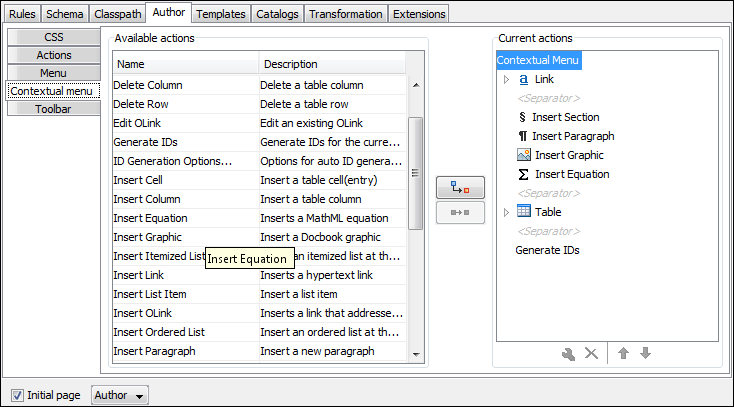

The contextual menu is displayed when you right-click in the
Author editing area. You can only configure the bottom part of the
menu, since the top part is reserved for a list of generic actions (such as Copy, Paste,
Undo, etc.)
Follow
the same steps as explained in the Configuring the Main Menu, except changing the menu name because the contextual
menu does not have a name.
Note: You can choose to reuse a submenu that contains general authoring actions. In this
case, all actions (both general and framework-specific ones) are grouped
together under the same submenu.
Figure 1. Configuring the Contextual Menu

To test it, open the test file, and open the contextual menu. In the lower part there is
shown the Table sub-menu and the Insert
section action.